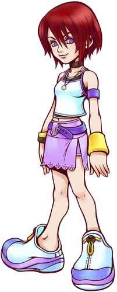
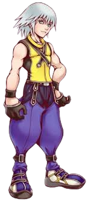
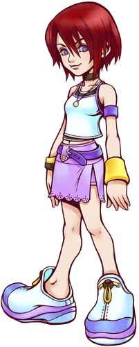
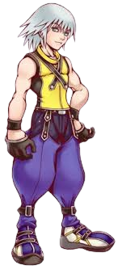
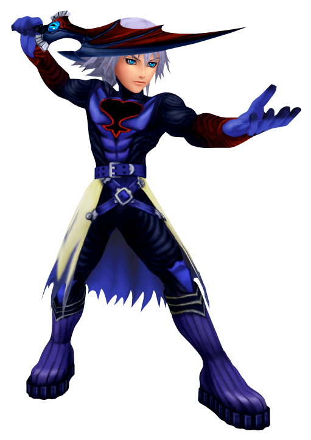
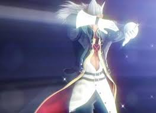
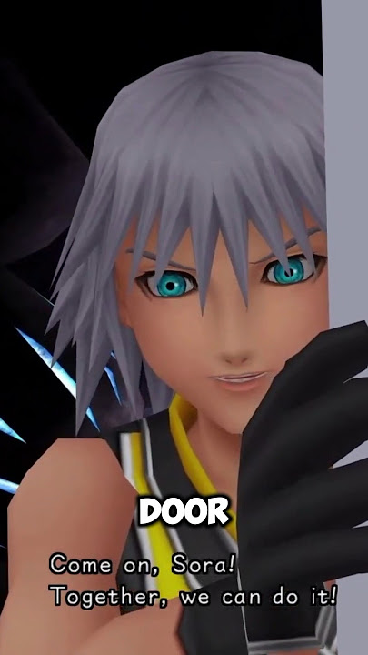

Released back in 2002 for the PlayStation 2, Kingdom Hearts, often referred to as Kingdom Hearts I, is the first game in the series. In an ambitious crossover, the series features characters from both Disney and Squaresoft’s (now Square Enix) Final Fantasy franchise. The story starts with Sora, a young boy who lives on the Destiny Islands with his friends Riku and Kairi.
_KH.png) 



The three friends wish to leave their islands to go explore other worlds. Little did they know that their wish would be granted. One night, a strange storm appears, bringing with it dark, mysterious creatures. These creatures attack Sora, whose attempts to defend himself fail until he receives the Keyblade a weapon that can fend off the strange creatures. Soon after the trio of friends are separated as Destiny Islands falls to Darkness.
Sora finds himself alone in a world called Traverse Town, where he meets Donald Duck and Goofy, who are on a search to find their missing king, King Mickey, and the very "key" that Sora now wields. Together they team up and travel the worlds looking for their missing friends.


On their travels Sora, Donald, and Goofy visit classic Disney worlds, fight classic Disney villains who have teamed up with the Heartless, and sseal the Keyholes to each world’s heart to prevent them from falling to Darkness. They find Riku who has teamed up with the evil witch Maleficent, and Kairi, who has seemed to have lost her heart. Sora and Riku clash again and again, until Riku has his body stolen from him, and is ultimately banished to the Darkness.
Sora and crew fight against the body snatcher and chase after him to the End of the World, where the remnants of the worlds that had fallen to Darkness now laid. After fighting the villain, the villain opens the door to a Kingdom Hearts made of the hearts of the destroyed worlds, believing it would grant him the power of everlasting darkness. But it turns out, Kingdom Hearts is Light, which destroys the villain.
The door also acts as a passageway between the realm of Light and the realm of Darkness, which is teeming with Heartless that seek to breach the Realm of Light. The trio try to close the door, and are surprised when they receive unexpected help from the other side. Riku and King Mickey are in the realm of Darkness, and help close the door, sealing them both on the other side.
When the door is sealed, Sora is surprised to find Kairi there standing on a platform of sand. After sharing a quiet moment, the sand platform begins to move, and Sora chooses to stay behind to search for Riku and King Mickey, rather than returning to the Destiny Islands with Kairi. The worlds lost to Darkness begin to restore themselves, and Sora and Kairi are suddenly worlds apart.

The game ends here, but the journey has only just started.